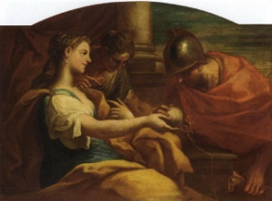
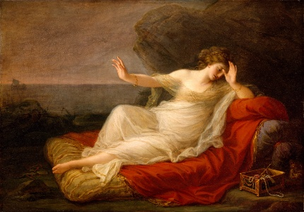

El cuadro representa la figura mítica de Ariadna durmiendo en una plaza pública vacía; es en referencia al mito que dio origen al personaje, en el que Ariadna es abandonada en Naxos por su amante Teseo.
La pintura, actualmente se encuentra en la colección del Museo Metropolitano de Arte en Nueva York, fue donada al museo como parte del legado de Florene Schoenborn en 1995.
Giorgio de Chirico
Biografía
Sasha / Getty Images
Giorgio de Chirico es uno de los pintores que pretendió plasmar el mundo de lo irracional con objetos cotidianos en contextos poco habituales, consiguiendo un realidad ilógica, pero a la vez verosímil.
Datos rápidos
Ocupación: Artista.
Movimientos Artísticos: Surrealismo.
Nacimiento: 10 de julio de 1888 en Volos, Grecia.
Murió: 20 de noviembre de 1978 en Roma, Italia.
Educación: Escuela de Bellas Artes de Atenas, Academia de Bellas Artes de Munich.
"El arte es la red fatal que atrapa estos extraños momentos volando como misteriosas mariposas, huyendo de la inocencia y la distracción de los hombres comunes".
Giorgio de Chirico.
Fundador de la scuola metafisica, en sus obras muestra sueños de plazas típicas de ciudades italianas muy idealizadas y todo tipo de objetos en ellas, debido a esto se considera a De Chirico una de las mayores influencias sobre el movimiento surrealista.
Giorgio de Chirico nace en 1888 en Volos (Grecia). Desde muy joven recibe una enseñanza sobre dibujo en la Escuela Politécnica de Atenas; a continuación, estudia entre 1906 y 1908 en la Academia de Bellas Artes de Munich. En 1910 sus estudios sobre Nietzsche le inducen a pintar sus primeros autoretratos y paisajes metafísicos.
Entre 1911 y 1915, se instala y trabaja en París y expone anualmente en diversos salones. Cuando se declara la guerra le asignan al hospital militar de Ferrara donde encuentra a Carlo Carra y Filippo De Pisis. Al final de la guerra, de Chirico se instala en Roma donde participa a las exposiciones de "Valores Plastici" y en 1919 tiene lugar su primera exposición personal y los artistas surrealistas se interesan a su “pintura metafísica” que anuncia la orientación de su futuro movimiento.
De la obra de Chirico se desprende un ambiente de misterio nostálgico. A partir de los años 20, el artista se expresa en una forma más clásica y usa técnicas retomadas de los antiguos maestros (veladura y temple). De nuevo vive en Paris entre 1924 y 1929. En 1926 se une al movimiento del Novecento que toma posición en contra del modernismo.
De Chirico explora en sus lienzos el tema del doble, representándose a sí mismo al lado de su madre y su hermano y combinando juegos de espejos. Asimismo pinta personajes de la mitología griega, retratos, caballos, compone naturalezas muertas a las cuales da el nombre de “vidas silenciosas”. Finalmente Giorgio de Chirico muere en Roma en 1978.
Las obras más conocidas de De Chirico son las pinturas de su período metafísico. En ellos desarrolló un repertorio de motivos —pórticos vacíos, torres, sombras alargadas, maniquíes y trenes entre otros— que dispuso para crear "imágenes de desamparo y vacío" que paradójicamente también transmiten un sentimiento de "poder y libertad".
La historia comienza con el Minotauro, el rey Minos decide ocultarlo y pide ayuda a Dédalo, quien diseña un perspicaz e intrincado laberinto.
Minos decidió mantener con vida al brutal monstruo, de modo que, se arrojaban periódicamente tributos humanos, estos tributos provenían de la ciudad de Atenas, regularmente debían entregar siete jóvenes varones y siete doncellas para que el Minotauro los devorase.
No obstante, el castigo impuesto por Minos tenía premio: si alguien lograba matar al Minotauro y salir victorioso del laberinto, entonces Atenas quedaría liberada del tributo.
Teseo era el hijo de Etra y Egeo, rey de Atenas (aunque hay relatos que cuentan que su verdadero padre era Poseidón). La tercera vez que los atenienses debían pagar su tributo, Teseo se ofrece a ir y matar al minotauro.
En Creta se encuentra por vez primera con la bella princesa Ariadna, hija de Minos y Pasífae. Ariadna quedó tan enamorada que quiso ayudar a Teseo en su heroica misión. Así pues, según el relato más extendido, la princesa le entrega de un ovillo de hilo; un ingenio que, por recomendación de Dédalo, permitía salir del laberinto. El héroe ateniense debía atar un extremo del hilo en la entrada y tras matar al Minotauro sólo tenía que enrollar el ovillo, sirviéndole de guía e indicándole el camino de regreso.

Niccolò Bambini. Ariadne and Theseus(Dominio público)
Gracias al hilo de Ariadna, Teseo salió triunfalmente del laberinto celebrando la acción que supuso la liberación de Atenas del yugo de Minos. Después, los dos se embarcaron rumbo a Atenas, sin embargo, ya en camino fueron víctimas de una terrible tormenta. Esto les obligó a desembarcar en la isla de Naxos donde Teseo abandonó a Ariadna mientras ella dormida en la orilla.
Existen muchos relatos y tradiciones diferentes sobre este suceso, una de las más conocidas señala que Dioniso, dios del vino y la fertilidad, vio a Ariadna y se enamoró de ella, finalmente Ariadna se casó con él. Teseo, por su parte, regresó a Atenas en su barco y posteriormente raptó a Fedra, hermana de Ariadna, y se casó con ella.

Angelica Kauffmann. Ariadne Abandoned by Theseus (Dominio público)